Understanding its Outputs
In this page
Understanding its Outputs#
For now, the CanGraph software itself is not capable of analyzing the generated networks and providing answers to your questions. To remedy this as much as possible, this part of the tutorial is centered with giving meaningful examples of possible outputs of the program, making its results more understandable.
For this, we are using a sample CSV file (which you can get in the link below), the Results that you obtain when you compute that CSV file and the Neo4J browser. If you have, until now, only followed the steps of the tutorial regarding the installation and usage of the Apptainer image, you might not have neo4j installed in your system. The easiest way to solve this is to install it using the python modules in CanGraph itself. You can run the following set of commands on a Linux System:
sudo apt update # Update the software lisy to last version
# Install required software for python to run
sudo apt install python3.9 python3-pip default-jdk default-jre git
apt -y autoremove; apt -y clean # Clean the package manager
git clone https://github.com/OMB-IARC/CanGraph # Clone the project
cd CanGraph # CD into the directory
python3 -m pip --no-cache-dir install --upgrade pip # Upgrade PIP
python3 -m pip install -r requirements.txt # Install python modules
python3 setup.py --neo4j neo4j # And run it!
And here, you can get the results for Metabolite 1 and Metabolite 2
Metabolite 1: 1-Amino-2-propanol#
For the first example, we have picked 1-Amino-2-propanol, an amino-alcohol involved in the biosynthesis of cobalamin. This metabolite appeared during lab research at IARC, and was submitted to us to test the software and find more information on it. Originally, we were given 7 identifiers, from which our program can just pick 4 (Name,InChI,HMDB_ID & ChEBI_ID) to find synonyms using varios web services. Thanks to them, we were able to expand the search to 17 identifiers, which are synonyms of the starting 7.
Having obtained the results as explained in the previous section, we would now like to analyze the outputs using Neo4J browser (the program CanGraph is built for), which you have already installed in your software. To launch a new session, simply call:
./neo4j/bin/neo4j start
from the directory that contains the neo4j folder. A message will indicate the directories in use, and will show you the adress for Neo4J’s web interface; most likely, http://localhost:7474. You should visit that link and log-in to the database (sometimes the login is automatic, in which case you have to do nothing) by using your user:password combination; the default ones are neo4j:neo4j, but, if you installed it using CanGraph scripts, you should try neo4j:$(head -n 1 .neo4jpassword); that is, neo4j as the user, and the first line of the .neo4jpassword the program will have created in your WorkDir as the password
Once logged-in, you will see a series of cards and a blinking cursor on the first; there, you can write your commands of choice in Neo4J’s Cypher Query Language. What follows is a list of possible commands that might help you understand the usefulness and powerfulness of the program.
First, of course, we need to import the GRAPHML file; to do this, we place metabolite_1.graphml in ./neo4j/import, and run:
CALL apoc.import.graphml("metabolite_1.graphml",
{batchSize: 5, useTypes:true, storeNodeIds:false, readLabels:True,
useOptimizations: {type: "UNWIND_BATCH", unwindBatchSize: 5} })
Inmediately, you will see the left tab populate with all the freshly imported data; in this case, 22 nodes, 22 relations and 134 properties, which represent all the knowledge available on 1-Amino-2-propanol and any really similar metabolites on the 7 databases CanGraph is able to query. We can start exploring this graph by running:
MATCH (n) RETURN n LIMIT 300
This Cypher query asks Neo4J to display all nodes present in the database, regardless of their labels or connections. To make sure the program does not crash, we have attached a LIMIT 300 statement to the query; in case your database is bigger than that (you can see the total number of nodes on the top left of the web app), you can also:
CALL db.schema.visualization()
which will just show you the schema, or general representation, of your database, so that you can see which kind of nodes have been imported. By sheer probability, the more nodes that your GraphML has, the more the schema will look similar to the complete schema as documented in the git repo
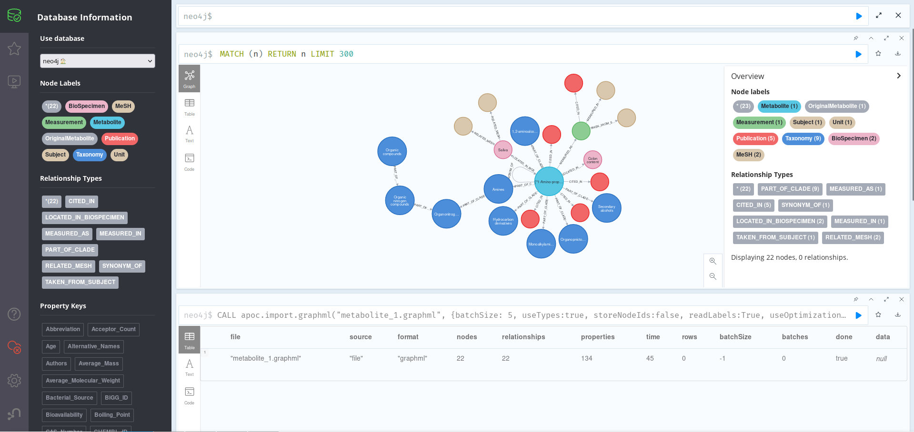
As we can see in the image above, the central Metabolite node above is related to 21 other nodes, which give us varied information on the Metabolite itself. For example, we can see that it can be found in BioSpecimens Saliva (with MeSH_IDs D012463 and M0019372) and Colon content, for which no MeSH_IDs where found. We can more dive more deeply on the database by, for example, asking for information on related Publications:
MATCH (n:Metabolite)-[]->(p:Publication)
WHERE n.Name CONTAINS "1-Amino-2-propanol"
Return p.Date, p.Publication, p.PubMed_ID, left(p.Title, 100)
Here, it is important to know that n.Name is a list property, which means that, instead of writing WHERE n.Name = "1-Amino-2-propanol", we have to add a CONTAINS statement to the query. As we can see, there are 4 Publications related to our original Metabolite, all of them with a Date, Publication, Title (trimmed to 100 characters for visualization) and PubMed_ID.
We can also ask ourselves: where has this metabolite been found, exactly? One possible answer to this question is the query below:
MATCH (n:Metabolite)-[]-(m:Measurement)-[]-(s)
// Since there is only 1 metabolite, we dont need to filter by name
RETURN COLLECT(s.Age), COLLECT(s.Gender), COLLECT(s.Information),
COLLECT(s.Name) as Units, COLLECT(LEFT(s.Publication, 30)) AS Title,
m.Value, m.Normal, m.Comments
Here, we are getting all the “Measurement” nodes relating a Metabolite and some other nodes, and showing their properties; since we only have one of each, and in order to make the results look prettier, we are using COLLECT to turn properties into lists (and remove null). As we can see, this metabolite has been detected in male adults, obtaining a Normal value of 0.324 +/- 0.413 in a 2013 study. If we look more deeply at the Publication node where this information came from, we see that its properties are a bit messed up, which is why the year 2013 appears in the article’s Title; this can happen sometimes when the material coming from the databases is not well standardised
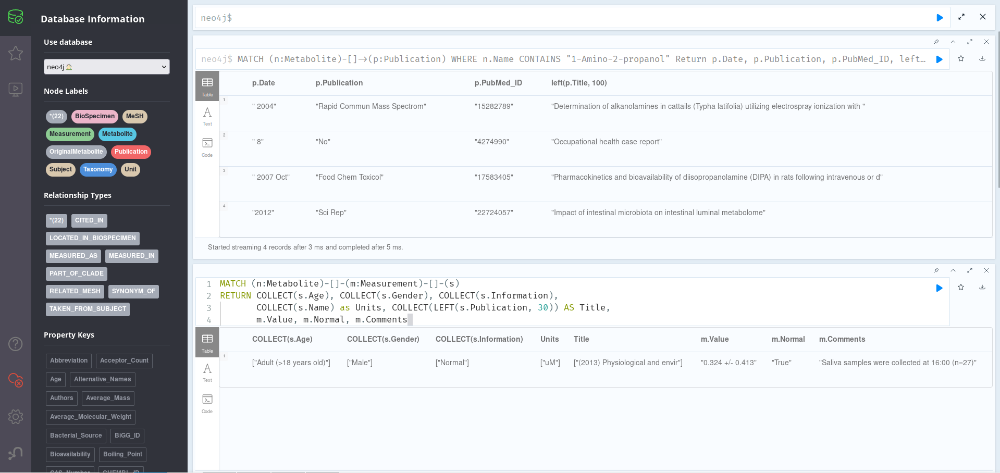
Finally, we can also ask the database for info on the kind of metabolite our metabolite is, as in, which groups it could be categorized as. This can be found out thanks to the Taxonomy nodes. If we run the query below:
MATCH (n:Metabolite)-[]-(t:Taxonomy)
OPTIONAL MATCH (t:Taxonomy)--(sb:Taxonomy)
OPTIONAL MATCH (sb:Taxonomy)--(c:Taxonomy)
OPTIONAL MATCH (c:Taxonomy)--(sp:Taxonomy)
OPTIONAL MATCH (sp:Taxonomy)--(k:Taxonomy)
WITH COLLECT(t) + COLLECT(sb) + COLLECT(c) +
COLLECT(sp) + COLLECT(k) as tx, n
UNWIND tx as tax
RETURN DISTINCT tax.Name, tax.Type, n.Name
ORDER BY tax.Type
Here, we are getting all the taxonomies related to our main node, and those related to them up to 4 generations. Then, we are joining all the lists (collected using COLLECT), and unwinding them back in order to return each Taxonomy’s Name & Type, as well as the name of the metabolite they relate to (which stays constant since there is only 1). As we have seen before, here the Name property is a list
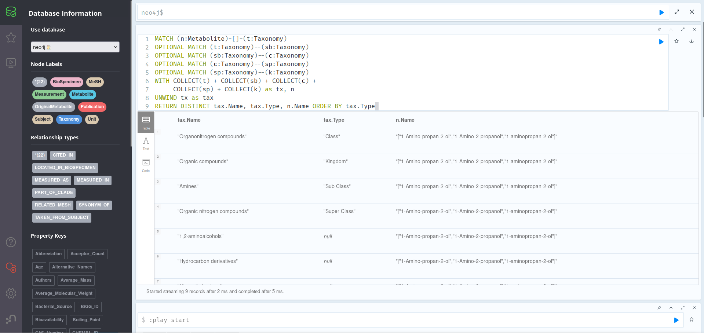
Once we are finished playing with the GraphML file, we can clean the database for the next example:
:auto MATCH (n)
CALL { WITH n
DETACH DELETE n
} IN TRANSACTIONS OF 100 ROWS
Metabolite 2: 2-Methylbutyrylcarnitine#
For the second example, we picked 2-Methylbutyrylcarnitine, a small molecule on which there is not much information online. The lab was able to provide us with 7 synonyms of the molecule, which our program expanded to 15 when doing the web search. After importing metabolite_2.graphml into a clean Neo4J session, as explained in the section above, we can proceed to explore it; since it consists of 83 nodes with 84 relations and 449 properties, printing all of them out is still a possibility:
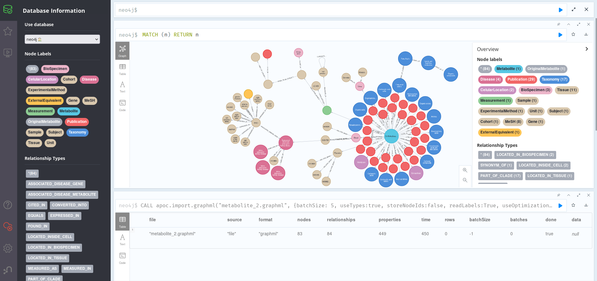
Here, we can once again see a central node (the Metabolite) with all the related information shown around it. Unlike in the other, however, there seem to be a lot of Publication nodes, which means some of them may be old and a bit outdated. We can find out by running:
MATCH (n:Metabolite)-[]-(p:Publication)
WITH split(p.Date, " ")[1] AS Year,
split(n.Name, "\"")[1] AS First_Name, n
WITH (toInteger(Year)/10)*10 AS Decade, Year, First_Name, n
RETURN First_Name, COUNT(Decade), Decade
ORDER BY Decade DESC
This query groups Publications related to Metabolites by decade of publication, ordering them in reverse cronological order. We can see that, although the information is pretty much evenly split across decades, there are also recent articles (7 in the 2010s), which should mean this is an still-relevant metabolite. To find about its location in the organism (and thus, maybe, its function), we can run:
MATCH (n:Metabolite)-->(m)
WHERE m:BioSpecimen OR m:Tissue OR m:CelularLocation
AND n.Name CONTAINS "2-Methylbutyrylcarnitine"
RETURN m.Name, labels(m), left(n.Description, SIZE(n.Description)-15)
This shows that the metabolite is present mainly on the membrane and extracellular compartments of cells of the placenta, being detected in blood and urine. If we cheat a bit by adding a (truncated for the screenshot) n.Description column, we can see that this molecule is part of the acyl carnitine family, a group of organic compounds containing a fatty acid with the carboxylic acid attached to carnitine through an ester bond. We could further explore the groups this belongs to by running the query in the previous section.
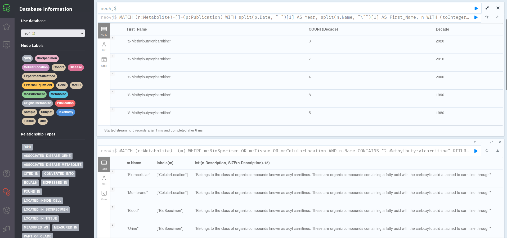
Now, we might want to find interesting information on possible disease associations; this can be done by running:
MATCH (n:Metabolite)-[r1]-(d:Disease)-[r2]-(m)
WHERE n.Name CONTAINS "2-Methylbutyrylcarnitine"
RETURN n.HMDB_ID[0], type(r1), d.Name, type(r2), m.Name, labels(m)
Here, we can see that the main Metabolite node is directly related to just one Disease: Autosomal dominant polycystic kidney disease. This, however, is a superclass of eline polycystic kidney disease, another disease; and is related with MeSH_ID D016891. We can also see a relation to gene PKD1 about which we can learn a bit more by examining it on the first query of the section, the full grid of nodes. Since it seems to only be related to Tissue nodes, we can customize our queries to just return those ones:
MATCH (n:Gene {Name:"PKD1"})--(m:Tissue)
RETURN n.Cytogenetic_Location, n.Genomic_Start,
n.Genomic_End, n.Strand_Orientation,
n.WikiData_ID, m.Name, m.WikiData_ID
We can see that the PKD1 gene is present in the 16th human chromosome, and that it has a length (end-start) of 47.188 base pairs on the reverse stand. Its transcripts are present in tissues such as canal of the cervix, tibial nerve, ascending aorta or the uterine tubes.
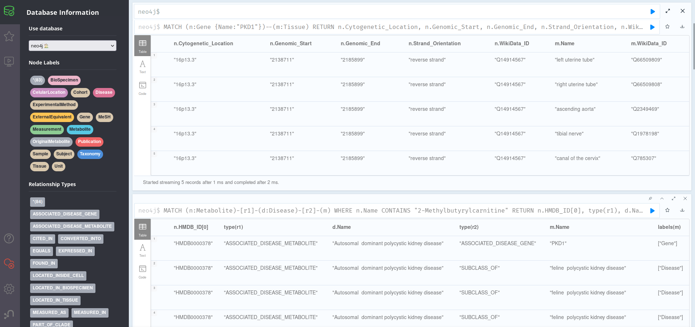
Topic Search: Hepatocellular Carcinoma#
Finally, for a third and shorter example, we have taken a topic search on Hepatocellular Carcinoma. This is so because we wanted to illustrate that, although CanGraph has been devised specifically for the search of information on specific metabolites, it is possible to use it also for generic information searches on a topic of interest.
To do this, we have two options:
We can either just provide the search term itself (HCC) together with some MeSH_IDs, using the –noindex flag. This is faster, but imports little nodes and is, in general, less useful: we know that the metabolites have “Hepatocellular Carcinoma” somewhere in their description or associated metadata, but we dont know exactly how tangencial the relation is or how much the import makes sense. Also, since the program only finds exact text matches, a disordered text chain (such as Carcinoma, Hepatocellular would not much
Alternatively, we can do an indirect search, querying the program for a series of metabolites that we know to be related to HCC, as well as the text-chain “Hepatocellular Carcinoma” itself and its Mesh_ID, using the indexed version of the software. The metabolites we picked where the 18 present in the Publication called “Prediagnostic alterations in circulating bile acid profiles in the development of hepatocellular carcinoma”, with doi:10.1002/ijc.33885
To make the results easier to follow, we are continuing this example with the indexed version. However, due to the confidentiality of some of the databases that we are using, and the fact that the exports for this example include thousands of nodes, we have decided not to provide the GraphML files for you to interact with; you can thus either generate them yourself, or just follow this tutorial for information.
From the 18 metabolites present in the cited paper, as well as the search term Hepatocellular Carcinoma and its MeSH_ID, D015179, CanGraph is able to extract 130 synonyms and related metabolites. After importing its results, following the steps described in the previous examples, we see that there are 145.935 nodes, 811.167 relationships and 1.319.878 properties, which will be the equivalent of the Metabolite_4 export you would get when running our sample CSV.
Since this is a huge export, printing all the nodes in Neo4J Browser is not a good idea; trying to do it would crash neo4j itself. Thus, we have to come up with different solutions:
First, we can print the schema, as previously explained:
CALL db.schema.visualization()
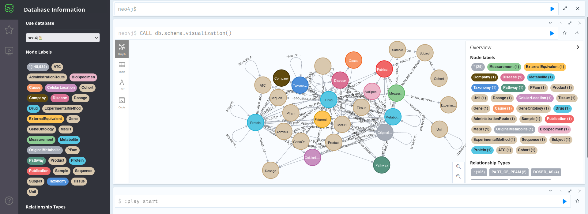
As we can see in the image above, with so many nodes, this is not that useful. We can see that the Schema here conforms to the general schema as documented in the git repo, as it should, but the information is too squeezed to be useful: we need another approach.
Using the following query we may print some interesting stats on the database itself:
MATCH (n) WHERE rand() <= 0.1 // Select only 10% of nodes for speed WITH labels(n) as labels, size(keys(n)) as props, size((n)--()) as degree RETURN DISTINCT labels, // Comment this line to show stats for all nodes count(*) AS NumofNodes, avg(props) AS AvgNumOfPropPerNode, min(props) AS MinNumPropPerNode, max(props) AS MaxNumPropPerNode, avg(degree) AS AvgNumOfRelationships, min(degree) AS MinNumOfRelationships, max(degree) AS MaxNumOfRelationships
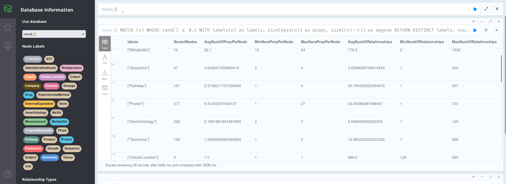
In the image above, we can see that, for instance, each metabolite has an average of 22 properties, with values ranging from 12-44 properties for each of the 10 nodes present in the database; or that there are 227 proteins, with an average of 23.09 proteins.
However, all this information still seems to generic, not providing any actionable insights into our data. We can thus modify the previous query; for instance, to show us the 10 most important Proteins related to any of our OriginalMetabolites (the ones we took from the International Journal of Cancer paper). This importance characteristic can be calculated in a number of ways, but, as a proxy, here we are using the degree of the protein node; that is, the number of connections that it has to other nodes:
MATCH (n:OriginalMetabolite)-[]-(p:Protein)
WITH size(keys(p)) as props, size((p)--()) as degree, p, n
RETURN
DISTINCT p.UniProt_ID AS UniProt_ID,
p.Name AS Protein_Name,
n.Name AS Metabolite_Name,
degree AS Degree,
props AS Number_of_Properties
ORDER BY degree DESC
LIMIT 10
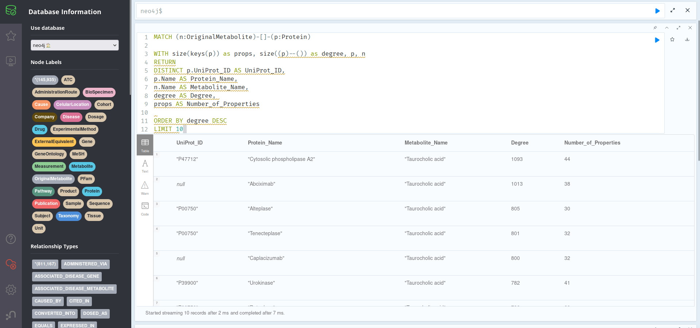
As we can see, most of the most important proteins are related to Taurocholic acid, which will probably be at least the most well-studied of our provided list of metabolites. Of these, the most relevant protein is Cytosolic phospholipase A2, with UniProt_ID: P47712. It may be worth exploring this protein further:
MATCH (p:Protein)-[]-(n)
WHERE p.UniProt_ID = "P47712"
RETURN p, n LIMIT 50
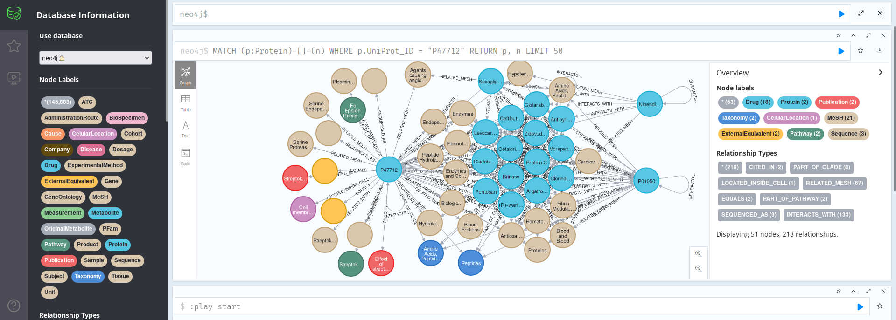
We can see that this protein is related with Saxagliptin, since they are both Agents causing angioedema; that is was cited in U.S. Patent US6087332, or that it appears on the Cell Membrane and is part of the Streptokinase Action Pathway.
Finally, we may display all the Diseases which have known causes that are present in our database (and which are somewhat related to HCC), ranked by degree:
MATCH (d:Disease)-[]-(c:Cause)
WITH size(keys(d)) AS props,
size((d)--()) AS Degree,
d.Name AS Disease,
c.Name AS Cause, d, c
RETURN
DISTINCT Disease, Cause, Degree
ORDER BY Degree DESC
LIMIT 10
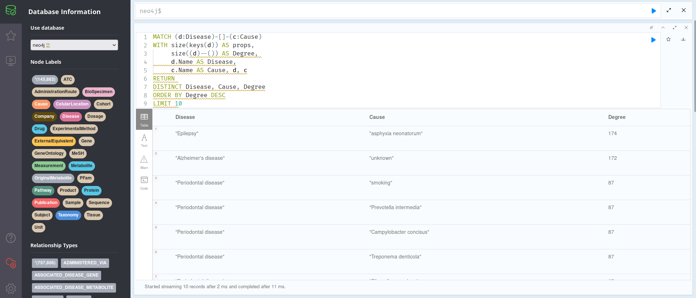
As one can see in the photo above, the most cited Diseases are Epilepsy and Alzheimer’s Disease; this might be useful for your research, although one should proceed with caution; this does not necessarily mean that HCC is associated with Alzheimer’s, but rather that they usually appear cited together in the 7 databases we are working with. Of course, this could also be an artifact, such as a given metabolite having many citations to, for instance, Epilepsy, and thus skewing the data when the other metabolites might not be linked with it; further exploring the Knowledge Graph, using the information provided on this tutorial and available on the internet, could help settle these and other questions.
Other Reading Material#
There are a thousand ways that Knowledge Graphs, such as the ones CanGraph provides, can be explored. In this tutorial, we aim to provide a useful compilation of possible queries, ways of working, and forms of analyzing them, but this are in no way all the different ways meaningful insights can be extracted from each GraphML export CanGraph might provide. Neo4J is a vast software, and tons of other useful programs for graph manipulation exist, such as Cytoscape or python itself. Neo4J even provides its own data visualization tool, Neo4J Bloom, although it is not open source and might require a paid license.
We would thus like to recommend you the following, useful resources:
Neo4J’s Graph Academy hosts a free knowledge base on the field of Graphs, which can serve as useful tutorials in case what is reflected here is too confusing or difficult to follow. In particular, I would recommend:
Their Neo4j Fundamentals course for a primer on how graphs work and on Neo4J itself
Their Cypher Fundamentals course, to expand on this tutorial and on outputs processing
Their Building Neo4j Applications with Python course, in case you want to really dive into how CanGraph works and modify it according to your needs.
Stack Overflow, which describes itself as “where developers learn, share & build careers” is a massive repository of questions and answers regarding all kinds of things in the informatics world. It is ikely that most of the questions you may have, or things you may want to use neo4j for, has been asked there already, so do not hesitate to search for more info or even ask there if you please.
Finally, in case you find any errors in this guides, or if you want to add any comments/suggestions, you may open an issue in our GitHub Repo. We look forward to any comments you may want to provide, and hope you have a fantastic experience using our software! :P